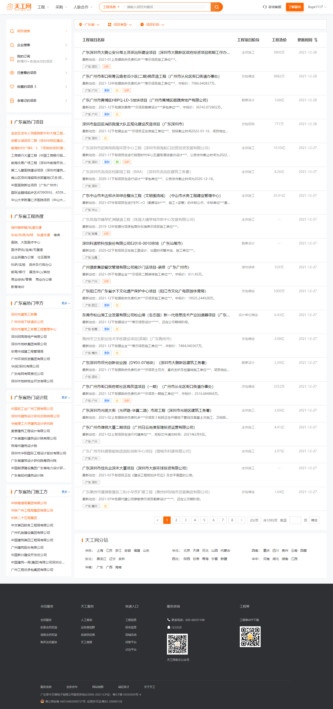

一、项目列表页（PC端）
0、需求目标
1）部分页面没有相互跳转的内部投票，站内投票少影响SEO排名；
2）本需求旨在增加站内互链，优化用户链接和点击行为；
1、左侧栏
1）左侧栏，【工程热搜】子列表下方，增加3个子列表；
2）增加【XX地区热门甲方】，其中XX地区为用户在当前页选中的地区筛选项，无选中地区则默认为全国；
3）增加【XX地区热门设计院】，其中XX地区为用户在当前页选中的地区筛选项，无选中地区则默认为全国；
4）增加【XX地区热门施工方】，其中XX地区为用户在当前页选中的地区筛选项，无选中地区则默认为全国；
2、列表项
1）甲方提取策略：甲方子列表抽取甲方库中半年内新增/更新项目最多的10个甲方，按(新增+更新)数量倒序排列，对前3项高亮；
2）设计院提取策略：设计院子列表抽取设计院库中半年内新增/更新项目最多的10个设计院，按(新增+更新)数量倒序排列，对前3项高亮；
3）施工方提取策略：施工方子列表抽取施工方库中半年内新增/更新项目最多的10个施工方，按(新增+更新)数量倒序排列，对前3项高亮；
3、查看更多
1）甲方子列表右上角显示更多，点击跳转企业搜索页，并筛选地区=XX、类型=甲方；
2）设计院子列表右上角显示更多，点击跳转企业搜索页，并筛选地区=XX、类型=设计院；
3）施工方子列表右上角显示更多，点击跳转企业搜索页，并筛选地区=XX、类型=施工方；
4）以上皆从新窗口中打开链接，后续页面做同样处理；
4、其它
1）左侧导航，增加企业搜索；从项目搜索跳转企业搜索时，将地区筛选项同步至企业搜索中；
2）其它部分，按原逻辑不变；
3）参考页面：https://p.tgnet.com/1.11/2.1/0/1/